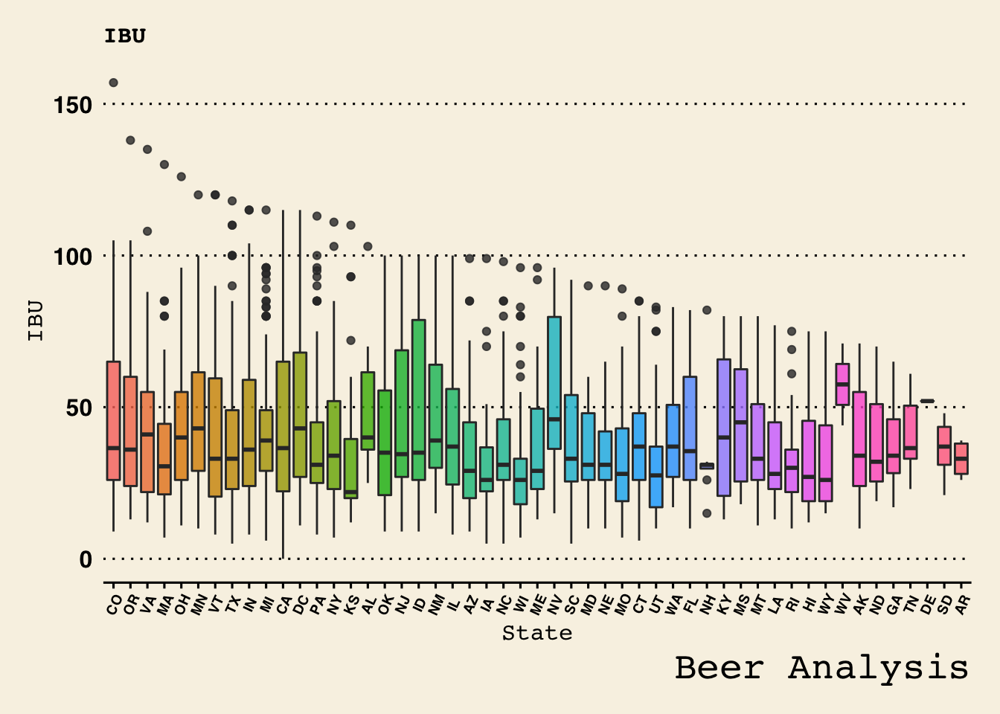

Case Study Beer
Jordan Salsman
10/24/2019
Link to RShiny App:
https://jsalsman7.shinyapps.io/Unit12/
Load following libraries
ggplot2, and ggthemes - visualizations
tidyverse
naniar and visdat - visualizations for missing data
mice and VIM - Imputation
GGally, ggmap,treemapify, and lattice - visualizations
stringr - regular expressions
class and klaR - classificiation functions
e1071 - Confusion Matrix
ROCR - ROC Curve
openintro - state to abbrevation function
caret - Regression
Load data into memory from csv
Load Breweries from csv
Load Beers from csv
Merge Breweries and Beers by the Brewery
Rename Names column after merging two datasets
breweries_ds <- read.csv("/Users/jordansalsman/Desktop/Unit12/Unit12/Breweries.csv", strip.white = TRUE)
beers_ds <- read.csv("/Users/jordansalsman/Desktop/Unit12/Unit12/Beers.csv", strip.white= TRUE)
bmerged_ds <- merge(breweries_ds,beers_ds,by.x="Brew_ID",by.y="Brewery_id")
names(bmerged_ds)[2] <- "BreweryName"
names(bmerged_ds)[5] <- "BeerName"Structures of the datasets
breweries_ds - Breweries in USA
beers_ds - Different beer styles with ABV and IBU and Ounces
bmerged_ds - Merged dataset
str(breweries_ds)## 'data.frame': 558 obs. of 4 variables:
## $ Brew_ID: int 1 2 3 4 5 6 7 8 9 10 ...
## $ Name : Factor w/ 551 levels "10 Barrel Brewing Company",..: 355 12 266 319 201 136 227 477 59 491 ...
## $ City : Factor w/ 384 levels "Abingdon","Abita Springs",..: 228 200 122 299 300 62 91 48 152 136 ...
## $ State : Factor w/ 51 levels "AK","AL","AR",..: 24 18 20 5 5 41 6 23 23 23 ...str(beers_ds)## 'data.frame': 2410 obs. of 7 variables:
## $ Name : Factor w/ 2304 levels "#001 Golden Amber Lager",..: 1637 576 1703 1841 1818 267 1159 757 1092 485 ...
## $ Beer_ID : int 1436 2265 2264 2263 2262 2261 2260 2259 2258 2131 ...
## $ ABV : num 0.05 0.066 0.071 0.09 0.075 0.077 0.045 0.065 0.055 0.086 ...
## $ IBU : int NA NA NA NA NA NA NA NA NA NA ...
## $ Brewery_id: int 409 178 178 178 178 178 178 178 178 178 ...
## $ Style : Factor w/ 100 levels "","Abbey Single Ale",..: 19 18 16 12 16 80 18 22 18 12 ...
## $ Ounces : num 12 12 12 12 12 12 12 12 12 12 ...str(bmerged_ds)## 'data.frame': 2410 obs. of 10 variables:
## $ Brew_ID : int 1 1 1 1 1 1 2 2 2 2 ...
## $ BreweryName: Factor w/ 551 levels "10 Barrel Brewing Company",..: 355 355 355 355 355 355 12 12 12 12 ...
## $ City : Factor w/ 384 levels "Abingdon","Abita Springs",..: 228 228 228 228 228 228 200 200 200 200 ...
## $ State : Factor w/ 51 levels "AK","AL","AR",..: 24 24 24 24 24 24 18 18 18 18 ...
## $ BeerName : Factor w/ 2304 levels "#001 Golden Amber Lager",..: 1639 1925 1524 801 1257 2184 71 457 1217 43 ...
## $ Beer_ID : int 2689 2688 2687 2692 2691 2690 2683 2686 2685 2684 ...
## $ ABV : num 0.06 0.06 0.056 0.045 0.049 0.048 0.042 0.08 0.125 0.077 ...
## $ IBU : int 38 25 47 50 26 19 42 68 80 25 ...
## $ Style : Factor w/ 100 levels "","Abbey Single Ale",..: 83 22 57 16 77 48 18 12 46 77 ...
## $ Ounces : num 16 16 16 16 16 16 16 16 16 16 ...Merged dataset
First and last 10 records from merged set
head(bmerged_ds)## Brew_ID BreweryName City State BeerName Beer_ID ABV
## 1 1 NorthGate Brewing Minneapolis MN Pumpion 2689 0.060
## 2 1 NorthGate Brewing Minneapolis MN Stronghold 2688 0.060
## 3 1 NorthGate Brewing Minneapolis MN Parapet ESB 2687 0.056
## 4 1 NorthGate Brewing Minneapolis MN Get Together 2692 0.045
## 5 1 NorthGate Brewing Minneapolis MN Maggie's Leap 2691 0.049
## 6 1 NorthGate Brewing Minneapolis MN Wall's End 2690 0.048
## IBU Style Ounces
## 1 38 Pumpkin Ale 16
## 2 25 American Porter 16
## 3 47 Extra Special / Strong Bitter (ESB) 16
## 4 50 American IPA 16
## 5 26 Milk / Sweet Stout 16
## 6 19 English Brown Ale 16tail(bmerged_ds)## Brew_ID BreweryName City State
## 2405 556 Ukiah Brewing Company Ukiah CA
## 2406 557 Butternuts Beer and Ale Garrattsville NY
## 2407 557 Butternuts Beer and Ale Garrattsville NY
## 2408 557 Butternuts Beer and Ale Garrattsville NY
## 2409 557 Butternuts Beer and Ale Garrattsville NY
## 2410 558 Sleeping Lady Brewing Company Anchorage AK
## BeerName Beer_ID ABV IBU Style
## 2405 Pilsner Ukiah 98 0.055 NA German Pilsener
## 2406 Porkslap Pale Ale 49 0.043 NA American Pale Ale (APA)
## 2407 Snapperhead IPA 51 0.068 NA American IPA
## 2408 Moo Thunder Stout 50 0.049 NA Milk / Sweet Stout
## 2409 Heinnieweisse Weissebier 52 0.049 NA Hefeweizen
## 2410 Urban Wilderness Pale Ale 30 0.049 NA English Pale Ale
## Ounces
## 2405 12
## 2406 12
## 2407 12
## 2408 12
## 2409 12
## 2410 12Summary Statistics of both datasets
breweries_ds - Breweries in USA
beers_ds - Different beer styles with ABV and IBU
bmerged_ds - Merged dataset
summary(breweries_ds)## Brew_ID Name City
## Min. : 1.0 Blackrocks Brewery : 2 Portland: 17
## 1st Qu.:140.2 Blue Mountain Brewery : 2 Boulder : 9
## Median :279.5 Lucette Brewing Company: 2 Chicago : 9
## Mean :279.5 Oskar Blues Brewery : 2 Seattle : 9
## 3rd Qu.:418.8 Otter Creek Brewing : 2 Austin : 8
## Max. :558.0 Sly Fox Brewing Company: 2 Denver : 8
## (Other) :546 (Other) :498
## State
## CO : 47
## CA : 39
## MI : 32
## OR : 29
## TX : 28
## PA : 25
## (Other):358summary(beers_ds)## Name Beer_ID ABV
## Nonstop Hef Hop : 12 Min. : 1.0 Min. :0.00100
## Dale's Pale Ale : 6 1st Qu.: 808.2 1st Qu.:0.05000
## Oktoberfest : 6 Median :1453.5 Median :0.05600
## Longboard Island Lager: 4 Mean :1431.1 Mean :0.05977
## 1327 Pod's ESB : 3 3rd Qu.:2075.8 3rd Qu.:0.06700
## Boston Lager : 3 Max. :2692.0 Max. :0.12800
## (Other) :2376 NA's :62
## IBU Brewery_id Style
## Min. : 4.00 Min. : 1.0 American IPA : 424
## 1st Qu.: 21.00 1st Qu.: 94.0 American Pale Ale (APA) : 245
## Median : 35.00 Median :206.0 American Amber / Red Ale : 133
## Mean : 42.71 Mean :232.7 American Blonde Ale : 108
## 3rd Qu.: 64.00 3rd Qu.:367.0 American Double / Imperial IPA: 105
## Max. :138.00 Max. :558.0 American Pale Wheat Ale : 97
## NA's :1005 (Other) :1298
## Ounces
## Min. : 8.40
## 1st Qu.:12.00
## Median :12.00
## Mean :13.59
## 3rd Qu.:16.00
## Max. :32.00
## summary(bmerged_ds)## Brew_ID BreweryName City
## Min. : 1.0 Brewery Vivant : 62 Grand Rapids: 66
## 1st Qu.: 94.0 Oskar Blues Brewery : 46 Portland : 64
## Median :206.0 Sun King Brewing Company : 38 Chicago : 55
## Mean :232.7 Cigar City Brewing Company: 25 Indianapolis: 43
## 3rd Qu.:367.0 Sixpoint Craft Ales : 24 San Diego : 42
## Max. :558.0 Hopworks Urban Brewery : 23 Boulder : 41
## (Other) :2192 (Other) :2099
## State BeerName Beer_ID
## CO : 265 Nonstop Hef Hop : 12 Min. : 1.0
## CA : 183 Dale's Pale Ale : 6 1st Qu.: 808.2
## MI : 162 Oktoberfest : 6 Median :1453.5
## IN : 139 Longboard Island Lager: 4 Mean :1431.1
## TX : 130 1327 Pod's ESB : 3 3rd Qu.:2075.8
## OR : 125 Boston Lager : 3 Max. :2692.0
## (Other):1406 (Other) :2376
## ABV IBU Style
## Min. :0.00100 Min. : 4.00 American IPA : 424
## 1st Qu.:0.05000 1st Qu.: 21.00 American Pale Ale (APA) : 245
## Median :0.05600 Median : 35.00 American Amber / Red Ale : 133
## Mean :0.05977 Mean : 42.71 American Blonde Ale : 108
## 3rd Qu.:0.06700 3rd Qu.: 64.00 American Double / Imperial IPA: 105
## Max. :0.12800 Max. :138.00 American Pale Wheat Ale : 97
## NA's :62 NA's :1005 (Other) :1298
## Ounces
## Min. : 8.40
## 1st Qu.:12.00
## Median :12.00
## Mean :13.59
## 3rd Qu.:16.00
## Max. :32.00
## Visual Summary
Total Breweries per state
Bar Chart
b_states <- breweries_ds %>% group_by(State) %>% count() %>% arrange(desc(n))
b_states$State <- factor(b_states$State, levels = b_states$State)
ggplot(b_states, aes(x=State, y=n)) +
geom_bar(stat="identity", width=.8, fill="tomato3") +
labs(title="Ordered Bar Chart",
subtitle="State Vs Number of Breweries",
caption="Beer Analysis") +
xlab("State")+
ylab("Total Breweries")+
theme_wsj()+
theme(axis.text.x = element_text(angle=65, vjust=0.6))+
theme(plot.title = element_text(size = rel(0.5)),
plot.subtitle = element_text(size = rel(0.5)),
axis.text.x = element_text(vjust=0.6,size=10),
axis.title = element_text(size = rel(0.5)),
legend.position = "right",
legend.direction ="vertical",
legend.title = element_text(size = rel(0.2)))More Visual Summary
Heat Map of Breweries per state
states <- map_data("state")
states$region <- state2abbr(states$region)
colnames(states)[colnames(states)=="region"] <- "State"
Brew_count <- breweries_ds %>% group_by(State) %>% count(State)
full <- merge(x = states, y = Brew_count, by = "State")
ggplot() +
geom_polygon(data=full, aes(x=long, y=lat, group = group, fill = n),colour="black")+
coord_fixed()+ guides(fill=guide_legend(title="Number of Breweries")) + theme_classic() + ggtitle("The Number of Breweries Across The Country") + annotate("text",x = -120, y = 31, label = "Alaska = 7") + annotate("text",x = -120, y = 28, label = "Hawaii = 4") + geom_text(label = n)Missing Values along State Variable
breweris_ds - Breweries in USA
beers_ds - Different beer styles with ABV and IBU
—Not randomly missing throughout
beer_ounces <- beers_ds
beer_ounces$Ounces <- as.factor(beer_ounces$Ounces)
gg_miss_var(bmerged_ds,facet=State)+
theme_wsj()+
theme(axis.text.x = element_text(angle=65, vjust=0.3))+
theme(plot.title = element_text(size = rel(0.5)),
plot.subtitle = element_text(size = rel(0.5)),
axis.text.x = element_text(vjust=0.6,size=8),
axis.text.y = element_text(vjust=0.2,size=4),
axis.title = element_text(size = rel(0.5)),
legend.position = "right",
legend.direction ="vertical",
legend.title = element_text(size = rel(0.2)))## Warning: `cols` is now required.
## Please use `cols = c(data)`Imputations
62 records doens’t have IBU and SBV both - these are deleted
Total records to process 2410-62 = 2348
Prediction is required on 943 missing IBU
Total records with IBU is 1405
Replacing with Linear Regression Imputations
bmerged_final_ds <- bmerged_ds %>% filter(!is.na(ABV) | !is.na(IBU))
non_missing_ibu <- bmerged_final_ds %>% filter(!is.na(IBU))
non_missing_ibu$imputed <- "N"
missing_ibu <- bmerged_final_ds %>% filter(is.na(IBU))
missing_ibu$imputed <- "Y"
model_ibu <- non_missing_ibu %>% lm(formula=log(IBU)~log(ABV))
summary(model_ibu)##
## Call:
## lm(formula = log(IBU) ~ log(ABV), data = .)
##
## Residuals:
## Min 1Q Median 3Q Max
## -2.81374 -0.30156 0.08312 0.38514 1.35081
##
## Coefficients:
## Estimate Std. Error t value Pr(>|t|)
## (Intercept) 8.99667 0.18115 49.66 <2e-16 ***
## log(ABV) 1.91683 0.06363 30.12 <2e-16 ***
## ---
## Signif. codes: 0 '***' 0.001 '**' 0.01 '*' 0.05 '.' 0.1 ' ' 1
##
## Residual standard error: 0.514 on 1403 degrees of freedom
## Multiple R-squared: 0.3927, Adjusted R-squared: 0.3923
## F-statistic: 907.4 on 1 and 1403 DF, p-value: < 2.2e-16missing_ibu$IBU <- round(exp(predict(model_ibu,missing_ibu)),0)
imputed_df <- rbind(non_missing_ibu,missing_ibu)
imputed_df$imputed <- as.factor(imputed_df$imputed)
imputed_df %>% ggplot(aes(x=ABV,y=IBU,color=imputed))+
geom_point()+ggtitle("ABV Vs IBU") +
theme_wsj()+
theme(axis.text.x = element_text(angle=65, vjust=0.3))+
theme(plot.title = element_text(size = rel(0.5)),
plot.subtitle = element_text(size = rel(0.5)),
axis.text.x = element_text(vjust=0.6,size=8),
axis.text.y = element_text(vjust=0.2,size=6),
axis.title = element_text(size = rel(0.5)),
legend.position = "right",
legend.direction ="vertical",
legend.title = element_text(size = rel(0.5)))State Vs Median ABV Bar Chart
abv_by_states <- imputed_df %>% group_by(State) %>% summarise(Median=as.numeric(median(ABV))) %>% arrange(desc(Median))
abv_by_states$State <- factor(abv_by_states$State, levels = abv_by_states$State)
ggplot(abv_by_states, aes(x=State, y=Median)) +
geom_bar(stat="identity", width=.8, fill="tomato3") +
labs(title="Ordered Bar Chart",
subtitle="Median ABV Vs State",
caption="Beer Analysis") +
xlab("State")+
ylab("Alcohol content")+
theme_wsj()+
theme(axis.text.x = element_text(angle=65, vjust=0.6))+
theme(plot.title = element_text(size = rel(0.5)),
plot.subtitle = element_text(size = rel(0.5)),
axis.text.x = element_text(vjust=0.6,size=7),
axis.title = element_text(size = rel(0.5)),
legend.position = "right",
legend.direction ="vertical",
legend.title = element_text(size = rel(0.2)))State Vs Median Bitterness Barchart
ibu_by_states <- imputed_df %>% group_by(State) %>% summarise(Median=as.numeric(median(IBU))) %>% arrange(desc(Median))
ibu_by_states$State <- factor(ibu_by_states$State, levels = ibu_by_states$State)
ggplot(ibu_by_states, aes(x=State, y=Median)) +
geom_bar(stat="identity", width=.8, fill="tomato3") +
labs(title="Ordered Bar Chart",
subtitle="Median IBU Vs State",
caption="Beer Analysis") +
xlab("State")+
ylab("Bitterness")+
theme_wsj()+
theme(axis.text.x = element_text(angle=65, vjust=0.6))+
theme(plot.title = element_text(size = rel(0.5)),
plot.subtitle = element_text(size = rel(0.5)),
axis.text.x = element_text(vjust=0.6,size=7),
axis.title = element_text(size = rel(0.5)),
legend.position = "right",
legend.direction ="vertical",
legend.title = element_text(size = rel(0.2)))Max ABV
max(imputed_df$ABV)## [1] 0.128which.max(imputed_df$ABV)## [1] 1569print(imputed_df[1569,])## Brew_ID BreweryName City State
## 1569 52 Upslope Brewing Company Boulder CO
## BeerName Beer_ID ABV
## 1569 Lee Hill Series Vol. 5 - Belgian Style Quadrupel Ale 2565 0.128
## IBU Style Ounces imputed
## 1569 157 Quadrupel (Quad) 19.2 YDistribution of ABV
Boxplot ABV
ibu_by_states <- imputed_df %>% group_by(State) %>% arrange(desc(ABV))
ibu_by_states$State <- factor(ibu_by_states$State, levels = unique(ibu_by_states$State))
str(ibu_by_states)## Classes 'grouped_df', 'tbl_df', 'tbl' and 'data.frame': 2348 obs. of 11 variables:
## $ Brew_ID : int 52 2 18 52 47 25 26 26 26 26 ...
## $ BreweryName: Factor w/ 551 levels "10 Barrel Brewing Company",..: 521 12 500 521 438 104 467 467 467 467 ...
## $ City : Factor w/ 384 levels "Abingdon","Abita Springs",..: 43 200 113 43 50 220 160 160 160 160 ...
## $ State : Factor w/ 51 levels "CO","KY","IN",..: 1 2 3 1 4 3 3 3 3 3 ...
## $ BeerName : Factor w/ 2304 levels "#001 Golden Amber Lager",..: 1181 1217 515 1180 54 1012 335 334 1104 337 ...
## $ Beer_ID : int 2565 2685 2621 2564 2574 2471 2083 1367 394 1049 ...
## $ ABV : num 0.128 0.125 0.12 0.104 0.1 0.099 0.099 0.099 0.099 0.099 ...
## $ IBU : num 157 80 90 105 52 115 36 75 60 60 ...
## $ Style : Factor w/ 100 levels "","Abbey Single Ale",..: 84 46 88 89 27 12 28 88 46 46 ...
## $ Ounces : num 19.2 16 16 19.2 12 12 16 16 16 16 ...
## $ imputed : Factor w/ 2 levels "N","Y": 2 1 1 2 1 1 1 1 1 1 ...
## - attr(*, "groups")=Classes 'tbl_df', 'tbl' and 'data.frame': 51 obs. of 2 variables:
## ..$ State: Factor w/ 51 levels "AK","AL","AR",..: 1 2 3 4 5 6 7 8 9 10 ...
## ..$ .rows:List of 51
## .. ..$ : int 581 682 794 795 883 906 1039 1091 1115 1116 ...
## .. ..$ : int 65 378 927 947 948 998 1092 1215 1644 1770
## .. ..$ : int 889 1161 1582 1809 2284
## .. ..$ : int 55 83 154 155 191 390 397 413 414 504 ...
## .. ..$ : int 11 25 26 28 45 58 59 63 69 110 ...
## .. ..$ : int 1 4 14 15 17 20 21 30 54 57 ...
## .. ..$ : int 107 108 113 114 129 388 447 486 569 867 ...
## .. ..$ : int 72 234 484 663 994 1356 1464 1735
## .. ..$ : int 1311
## .. ..$ : int 171 200 304 305 306 346 366 372 402 420 ...
## .. ..$ : int 379 664 734 764 841 843 1158 1252 1379 1429 ...
## .. ..$ : int 167 188 367 368 495 553 766 767 838 938 ...
## .. ..$ : int 60 97 310 409 452 453 454 558 686 936 ...
## .. ..$ : int 24 38 81 157 256 400 760 768 797 798 ...
## .. ..$ : int 49 50 51 106 130 147 166 174 175 176 ...
## .. ..$ : int 3 6 7 8 9 10 82 85 86 87 ...
## .. ..$ : int 134 146 359 360 537 780 814 1175 1389 1573 ...
## .. ..$ : int 2 102 168 194 268 281 481 611 701 743 ...
## .. ..$ : int 115 435 436 570 699 729 1265 1344 1551 1594 ...
## .. ..$ : int 23 93 140 212 350 355 389 500 531 540 ...
## .. ..$ : int 135 353 380 404 476 489 522 949 970 1016 ...
## .. ..$ : int 39 48 385 449 518 520 576 590 628 810 ...
## .. ..$ : int 31 32 33 42 43 47 62 67 68 78 ...
## .. ..$ : int 16 29 41 44 161 165 294 337 361 382 ...
## .. ..$ : int 228 302 442 450 492 718 719 786 813 882 ...
## .. ..$ : int 199 270 303 1070 1071 1072 1452 1630 1719 1720 ...
## .. ..$ : int 328 374 443 580 694 695 696 697 698 811 ...
## .. ..$ : int 27 75 123 214 215 249 322 376 377 393 ...
## .. ..$ : int 600 1754 2134
## .. ..$ : int 53 243 325 675 737 769 879 1150 1206 1207 ...
## .. ..$ : int 642 1234 1323 1324 1325 1391 1797 2345
## .. ..$ : int 22 259 514 1731 2238 2241 2286 2323
## .. ..$ : int 244 373 401 630 735 831 870 924 1303 1378 ...
## .. ..$ : int 40 64 250 347 845 1095 1545 1567 1737 1738
## .. ..$ : int 5 12 13 84 151 204 226 418 501 556 ...
## .. ..$ : int 34 37 109 148 251 260 271 272 364 422 ...
## .. ..$ : int 153 242 284 460 544 575 790 791 801 991 ...
## .. ..$ : int 116 143 144 170 177 258 273 308 309 329 ...
## .. ..$ : int 36 73 74 96 141 158 169 182 192 224 ...
## .. ..$ : int 127 136 265 434 641 648 736 939 940 941 ...
## .. ..$ : int 46 66 275 554 847 954 1279 1376 1441 1765 ...
## .. ..$ : int 527 627 733 993 1353 1354 2164
## .. ..$ : int 830 951 1048 1292 1788 2126
## .. ..$ : int 18 19 56 70 76 92 133 137 138 139 ...
## .. ..$ : int 94 95 238 340 341 1001 1002 1007 1499 1724 ...
## .. ..$ : int 112 315 419 427 445 487 498 543 677 678 ...
## .. ..$ : int 52 172 183 193 210 211 237 371 491 996 ...
## .. ..$ : int 159 221 241 248 279 280 333 517 559 610 ...
## .. ..$ : int 35 80 122 312 369 395 658 668 787 827 ...
## .. ..$ : int 594 1131
## .. ..$ : int 391 465 545 915 1040 1414 1539 1728 1729 1818 ...
## ..- attr(*, ".drop")= logi TRUEibu_by_states %>% ggplot(aes(y=ABV,x=State)) +
geom_boxplot(aes(fill=State), alpha=0.8,show.legend = FALSE) +
labs(title="Alcohol Content",
caption="Beer Analysis") +
xlab("State")+
ylab("Alcohol content")+
theme_wsj()+
theme(axis.text.x = element_text(angle=65, vjust=0.6))+
theme(plot.title = element_text(size = rel(0.5)),
plot.subtitle = element_text(size = rel(0.5)),
axis.text.x = element_text(vjust=0.6,size=7),
axis.title = element_text(size = rel(0.5)),
legend.position = "right",
legend.direction ="vertical",
legend.title = element_text(size = rel(0.2)))Max IBU
max(imputed_df$IBU)## [1] 157which.max(imputed_df$IBU)## [1] 1569print(imputed_df[1569,])## Brew_ID BreweryName City State
## 1569 52 Upslope Brewing Company Boulder CO
## BeerName Beer_ID ABV
## 1569 Lee Hill Series Vol. 5 - Belgian Style Quadrupel Ale 2565 0.128
## IBU Style Ounces imputed
## 1569 157 Quadrupel (Quad) 19.2 YDistribution of IBU
Boxplot IBU
ibu_by_states <- imputed_df %>% group_by(State) %>% arrange(desc(IBU))
ibu_by_states$State <- factor(ibu_by_states$State, levels = unique(ibu_by_states$State))
str(ibu_by_states)## Classes 'grouped_df', 'tbl_df', 'tbl' and 'data.frame': 2348 obs. of 11 variables:
## $ Brew_ID : int 52 375 345 231 100 62 273 273 215 18 ...
## $ BreweryName: Factor w/ 551 levels "10 Barrel Brewing Company",..: 521 35 545 111 129 469 483 483 103 500 ...
## $ City : Factor w/ 384 levels "Abingdon","Abita Springs",..: 43 17 1 134 71 51 363 363 155 113 ...
## $ State : Factor w/ 51 levels "CO","OR","VA",..: 1 2 3 4 5 6 7 7 8 9 ...
## $ BeerName : Factor w/ 2304 levels "#001 Golden Amber Lager",..: 1181 260 2100 560 203 84 931 931 1340 1501 ...
## $ Beer_ID : int 2565 980 1676 2067 2440 15 1111 379 2123 1449 ...
## $ ABV : num 0.128 0.082 0.059 0.09 0.089 0.097 0.08 0.08 0.09 0.085 ...
## $ IBU : num 157 138 135 130 126 120 120 120 118 115 ...
## $ Style : Factor w/ 100 levels "","Abbey Single Ale",..: 84 12 16 12 12 12 12 12 12 12 ...
## $ Ounces : num 19.2 12 12 16 12 16 16 16 16 16 ...
## $ imputed : Factor w/ 2 levels "N","Y": 2 1 1 1 1 1 1 1 1 1 ...
## - attr(*, "groups")=Classes 'tbl_df', 'tbl' and 'data.frame': 51 obs. of 2 variables:
## ..$ State: Factor w/ 51 levels "AK","AL","AR",..: 1 2 3 4 5 6 7 8 9 10 ...
## ..$ .rows:List of 51
## .. ..$ : int 271 285 303 431 473 474 573 736 745 746 ...
## .. ..$ : int 27 317 430 586 818 1065 1097 1098 1396 1717
## .. ..$ : int 965 1005 1221 1488 1595
## .. ..$ : int 52 120 121 267 268 422 499 512 616 712 ...
## .. ..$ : int 13 28 29 30 54 73 78 84 85 87 ...
## .. ..$ : int 1 22 24 33 34 35 40 51 56 58 ...
## .. ..$ : int 142 143 195 196 248 614 670 724 939 987 ...
## .. ..$ : int 14 177 444 668 1061 1315 2208 2282
## .. ..$ : int 606
## .. ..$ : int 159 164 185 223 290 291 292 379 380 381 ...
## .. ..$ : int 394 571 574 575 854 897 901 1117 1218 1338 ...
## .. ..$ : int 224 225 342 347 361 405 679 885 903 904 ...
## .. ..$ : int 55 237 312 626 691 692 784 1075 1096 1389 ...
## .. ..$ : int 43 44 45 46 68 86 102 158 365 399 ...
## .. ..$ : int 48 49 50 104 105 123 178 194 205 249 ...
## .. ..$ : int 10 11 23 91 92 93 115 189 193 198 ...
## .. ..$ : int 17 81 82 259 484 799 1115 1171 1348 1479 ...
## .. ..$ : int 165 190 334 335 336 368 665 821 863 874 ...
## .. ..$ : int 203 498 605 651 725 849 1013 1126 1303 1457 ...
## .. ..$ : int 4 126 135 166 181 332 369 427 564 565 ...
## .. ..$ : int 97 524 592 660 673 695 756 785 1037 1083 ...
## .. ..$ : int 69 90 287 331 407 476 611 731 811 890 ...
## .. ..$ : int 12 61 62 63 79 80 89 109 150 151 ...
## .. ..$ : int 6 32 53 96 101 113 124 145 179 206 ...
## .. ..$ : int 108 167 297 308 367 375 438 676 781 838 ...
## .. ..$ : int 168 253 378 491 492 766 929 1264 2000 2001 ...
## .. ..$ : int 174 400 401 418 419 420 518 548 600 601 ...
## .. ..$ : int 57 140 141 182 216 245 333 408 409 459 ...
## .. ..$ : int 309 1239 2044
## .. ..$ : int 107 402 453 545 857 906 1018 1019 1020 1156 ...
## .. ..$ : int 160 1260 1282 1283 1284 1350 1583 2198
## .. ..$ : int 42 175 391 1138 1177 1380 2093 2317
## .. ..$ : int 47 72 256 454 813 855 990 1337 1377 1394 ...
## .. ..$ : int 70 100 148 460 640 898 955 1169 2210 2211
## .. ..$ : int 16 25 122 241 264 276 320 322 329 429 ...
## .. ..$ : int 5 64 67 176 219 261 284 286 341 348 ...
## .. ..$ : int 41 183 197 266 452 730 1017 1058 1132 1133 ...
## .. ..$ : int 2 21 26 39 60 75 76 77 98 99 ...
## .. ..$ : int 15 31 66 71 83 103 125 136 137 139 ...
## .. ..$ : int 221 325 478 584 585 856 1064 1125 1180 1188 ...
## .. ..$ : int 88 149 406 525 967 1021 1142 1335 1375 1420 ...
## .. ..$ : int 700 810 853 1060 1312 1313 1923
## .. ..$ : int 475 577 1016 1106 1244 1804
## .. ..$ : int 9 18 19 36 37 38 94 127 128 222 ...
## .. ..$ : int 152 162 231 232 448 884 1068 1069 1074 1176 ...
## .. ..$ : int 3 20 110 277 310 392 411 520 521 567 ...
## .. ..$ : int 7 8 106 172 356 424 447 563 675 771 ...
## .. ..$ : int 154 163 169 184 236 257 298 299 300 319 ...
## .. ..$ : int 65 157 173 180 301 426 508 559 620 639 ...
## .. ..$ : int 270 798
## .. ..$ : int 235 506 558 617 1095 1237 1604 1672 1857 1979 ...
## ..- attr(*, ".drop")= logi TRUEibu_by_states %>% ggplot(aes(y=IBU,x=State)) +
geom_boxplot(aes(fill=State), alpha=0.8,show.legend = FALSE) +
labs(title="IBU",
caption="Beer Analysis") +
xlab("State")+
ylab("IBU")+
theme_wsj()+
theme(axis.text.x = element_text(angle=65, vjust=0.6))+
theme(plot.title = element_text(size = rel(0.5)),
plot.subtitle = element_text(size = rel(0.5)),
axis.text.x = element_text(vjust=0.6,size=7),
axis.title = element_text(size = rel(0.5)),
legend.position = "right",
legend.direction ="vertical",
legend.title = element_text(size = rel(0.2)))
Summary Statistics of ABV
Density plot and Histogram of ABV Distribition
imputed_df %>% ggplot(aes(x=ABV, fill = State)) +
geom_histogram(bins=30) +
labs(title="ABV Distribution"
) +
ylab("Alcohol content")+
theme_wsj()+
theme(axis.text.x = element_text(angle=65, vjust=0.6))+
theme(plot.title = element_text(size = rel(0.5)),
plot.subtitle = element_text(size = rel(0.5)),
axis.text.x = element_text(vjust=0.6,size=7),
axis.title = element_text(size = rel(0.5)),
legend.position = "right",
legend.direction ="vertical",
legend.title = element_text(size = rel(0.2)))imputed_df %>% ggplot(aes(x=ABV)) +
geom_density(aes(fill=State), alpha=0.8) +
labs(title="Density Plot",
caption="Beer Analysis") +
xlab("State")+
ylab("Alcohol content")+
theme_wsj()+
theme(axis.text.x = element_text(angle=65, vjust=0.6))+
theme(plot.title = element_text(size = rel(0.5)),
plot.subtitle = element_text(size = rel(0.5)),
axis.text.x = element_text(vjust=0.6,size=7),
axis.title = element_text(size = rel(0.5)),
legend.position = "right",
legend.direction ="vertical",
legend.title = element_text(size = rel(0.2)))## Warning: Groups with fewer than two data points have been dropped.
summary(imputed_df$ABV)## Min. 1st Qu. Median Mean 3rd Qu. Max.
## 0.00100 0.05000 0.05600 0.05977 0.06700 0.12800Scatterplot and Correlation of ABV vs IBU
imputed_df %>% ggplot(aes(x=ABV,y=IBU))+
geom_point(color = "Red")+
theme_wsj()+
geom_smooth(method="lm")+
labs(title="ABV Vs. IBU",
caption="Beer Analysis") +
theme(axis.text.x = element_text(angle=65, vjust=0.3))+
theme(plot.title = element_text(size = rel(0.5)),
plot.subtitle = element_text(size = rel(0.5)),
axis.text.x = element_text(vjust=0.6,size=8),
axis.text.y = element_text(vjust=0.2,size=6),
axis.title = element_text(size = rel(0.5)),
legend.position = "right",
legend.direction ="vertical",
legend.title = element_text(size = rel(0.5)))cor(imputed_df$ABV,imputed_df$IBU)## [1] 0.753397KNN with Cross-validation and K-Tuning
Confusion Matrix
K Hyper-Parameter tuning plot
library(e1071)
imputed_df$Style <- toupper(imputed_df$Style)
IPA <- imputed_df %>% filter(str_detect(Style, "IPA"))
IPA$Style <- "IPA"
ALE <- imputed_df %>% filter(str_detect(Style, "IPA" , negate = TRUE)) %>% filter(str_detect(Style, "ALE"))
ALE$Style <- "Ale"
mod_df <- rbind(IPA, ALE)
set.seed(7)
iterations = 100
k = 30
Acc_holder = matrix(nrow = iterations, ncol = k)
for(j in 1:iterations)
{
smp <- floor(0.75 * nrow(mod_df))
train_ind <- sample(seq_len(nrow(mod_df)), size = smp)
imputed_train <- mod_df[train_ind, ]
imputed_test <- mod_df[-train_ind, ]
for(i in 1:k)
{
classifications <- knn(imputed_train[,c(7,8)], imputed_test[,c(7,8)], imputed_train$Style, prob = TRUE, k = i)
CM <- confusionMatrix(table(classifications, imputed_test$Style))
Acc_holder[j,i] = CM$overall[1]
}
}
MeanAcc = colMeans(Acc_holder)
which.max(MeanAcc)## [1] 7k <- c(1:30)
Mean_Acc_df <- data_frame(MeanAcc)## Warning: `data_frame()` is deprecated, use `tibble()`.
## This warning is displayed once per session.Mean_Acc_df <- cbind(k, Mean_Acc_df)
Mean_Acc_df %>% ggplot(aes(x = k, y= MeanAcc)) +
geom_line(color = "blue", alpha = .8) +
labs(title="Cross-Validating Different KNN Models",
caption="KNN Score Across K's") +
xlab("K's")+
ylab("Prediction Accuracy")+
theme_wsj()+
theme(axis.text.x = element_text(angle=65, vjust=0.6))+
theme(plot.title = element_text(size = rel(0.5)),
plot.subtitle = element_text(size = rel(0.5)),
axis.text.x = element_text(vjust=0.6,size=7),
axis.title = element_text(size = rel(0.5)),
legend.position = "right",
legend.direction ="vertical",
legend.title = element_text(size = rel(0.2)))classifications <- knn(imputed_train[,c(7,8)], imputed_test[,c(7,8)], imputed_train$Style, prob = TRUE, k = 6)
CM <- confusionMatrix(table(classifications, imputed_test$Style))
CM## Confusion Matrix and Statistics
##
##
## classifications Ale IPA
## Ale 205 31
## IPA 41 107
##
## Accuracy : 0.8125
## 95% CI : (0.7698, 0.8503)
## No Information Rate : 0.6406
## P-Value [Acc > NIR] : 1.206e-13
##
## Kappa : 0.5992
##
## Mcnemar's Test P-Value : 0.2888
##
## Sensitivity : 0.8333
## Specificity : 0.7754
## Pos Pred Value : 0.8686
## Neg Pred Value : 0.7230
## Prevalence : 0.6406
## Detection Rate : 0.5339
## Detection Prevalence : 0.6146
## Balanced Accuracy : 0.8043
##
## 'Positive' Class : Ale
## Further exploration
Separating Beers into known Light and Dark
—Only Beers that are definitely Light or Dark are used
imputed_df$Style <- toupper(imputed_df$Style)
Blonde <- imputed_df %>%filter(str_detect(Style, "BLONDE"))
Blonde$Style <- "Light"
Light <- imputed_df %>%filter(str_detect(Style, "LIGHT"))
Light$Style <- "Light"
Cream <- imputed_df %>%filter(str_detect(Style, "CREAM"))
Cream$Style <- "Light"
Shandy <- imputed_df %>%filter(str_detect(Style, "SHANDY"))
Shandy$Style <- "Light"
Porter <- imputed_df %>%filter(str_detect(Style, "PORTER"))
Porter$Style <- "Dark"
Stout <- imputed_df %>%filter(str_detect(Style, "STOUT"))
Stout$Style <- "Dark"
Dark <- imputed_df %>%filter(str_detect(Style, "DARK"))
Dark$Style <- "Dark"
Black <- imputed_df %>%filter(str_detect(Style, "BLACK"))
Black$Style <- "Dark"
color <- rbind(Blonde,Light,Porter,Stout,Dark,Black,Cream,Shandy)Using Naive Bayes to classify Light Vs. Dark Beers
ROC Curve plot
Confusion Matrix
iterations = 100
AccHolder = numeric(100)
SensHolder = numeric(100)
SpecHolder = numeric(100)
for(seed in 1:iterations)
{
set.seed(seed)
Indices = sample(seq(1:length(color$Style)),round(.75*length(color$Style)))
train_color = color[Indices,]
test_color = color[-Indices,]
model = naiveBayes(train_color[,c("ABV", "IBU", "State")],factor(train_color$Style, labels = c("Light", "Dark")))
CM = confusionMatrix(table(factor(test_color$Style, labels = c("Light", "Dark")),predict(model,test_color[,c("ABV", "IBU", "State")])))
AccHolder[seed] = CM$overall[1]
SensHolder[seed] = CM$byClass[1]
SpecHolder[seed] = CM$byClass[2]
}
mean(AccHolder)## [1] 0.7730526mean(SensHolder)## [1] 0.9046627mean(SpecHolder)## [1] 0.6568694which.max(AccHolder)## [1] 84which.max(SensHolder)## [1] 2which.max(SpecHolder)## [1] 100set.seed(38)
Indices = sample(seq(1:length(color$Style)),round(.75*length(color$Style)))
train_color = color[Indices,]
test_color = color[-Indices,]
model = naiveBayes(train_color[,c("ABV", "IBU", "State")],factor(train_color$Style, labels = c("Light", "Dark")))
CM = confusionMatrix(table(factor(test_color$Style, labels = c("Light", "Dark")),predict(model,test_color[,c("ABV", "IBU", "State")])))
CM## Confusion Matrix and Statistics
##
##
## Light Dark
## Light 39 16
## Dark 5 35
##
## Accuracy : 0.7789
## 95% CI : (0.6822, 0.8577)
## No Information Rate : 0.5368
## P-Value [Acc > NIR] : 8.711e-07
##
## Kappa : 0.563
##
## Mcnemar's Test P-Value : 0.0291
##
## Sensitivity : 0.8864
## Specificity : 0.6863
## Pos Pred Value : 0.7091
## Neg Pred Value : 0.8750
## Prevalence : 0.4632
## Detection Rate : 0.4105
## Detection Prevalence : 0.5789
## Balanced Accuracy : 0.7863
##
## 'Positive' Class : Light
## pred_nb <- predict(model,test_color[,c("ABV", "IBU", "State")], type = 'raw')
pred <- prediction(pred_nb[, 2], test_color$Style)
nb.prff = performance(pred, "tpr", "fpr")
plot(nb.prff,main="ROC Curve")